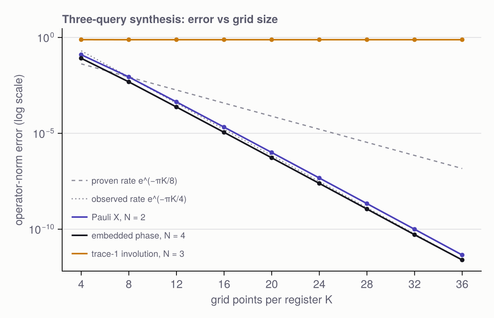

Trading depth for width
Everything else in this package minimises CNOT count on exactly n wires. This page is about the other axis: circuit depth, and what extra wires can buy. The guiding result is Nehoran and Yuen, All Unitaries Have Constant Depth Quantum Circuits (2026):
Every n-qubit unitary can be implemented to operator-norm error ε by one- and two-qubit gates in depth O(n + log log 1/ε), using Õ(4ⁿ) ancillas — and in constant depth if 2^O(n)-qubit fan-out gates count as one step.
Counting arguments still force about 4ⁿ gates; the theorem says they can almost all run at the same time. The pieces needed to state, check and explore that result are below.
Depth
depth schedules every gate as early as its wires allow and counts the steps; depth(c, :CNOT) counts only CNOTs. The same CNOTs can have very different depths. A phase gadget collects a parity onto one wire — as a ladder, or as a doubling tree:
for style in (:ladder, :tree, :gate)
c = phase_gadget(0.3, 1:8; style = style)
println(rpad(style, 8), count_cnots(c), " CNOTs, depth ", depth(c))
endladder 14 CNOTs, depth 15
tree 14 CNOTs, depth 7
gate 0 CNOTs, depth 3:gate uses one PARITY gate per collection: the unbounded fan-out model, in which a gate touching any number of wires costs one step. fanout! and parity! give all three forms of the underlying operations; the :tree fan-out is exact on every input, not only on targets prepared in |0⟩.
Ancillas
Circuits track which wires are ancillas (add_ancillas!), and can report what they do on the data wires with the ancillas prepared — and required to finish — in |0⟩. That is precisely the form of the theorem's guarantee, ‖C (I ⊗ |0⟩) - U ⊗ |0⟩‖ ≤ ε, which implementation_error computes.
A small example of width buying depth: C⁸X as a balanced tree of Toffolis (and!), against the ancilla-free Gray-code construction.
tree = Circuit(9); and!(tree, 1:8, 9)
flat = multicontrolled(matrix(X()), 1:8, 9)
println("tree: ", length(ancillas(tree)), " ancillas, depth ", depth(tree),
", clean: ", is_clean(tree))
println("flat: 0 ancillas, depth ", depth(flat))
println("disagreement: ", implementation_error(tree, matrix(flat)))tree: 6 ancillas, depth 5, clean: true
flat: 0 ancillas, depth 503
disagreement: 7.560026051390474e-14Reducing to real symmetric involutions
The theorem's construction only handles a narrow class — real, symmetric, traceless S with S² = I — and that loses nothing (their Lemma 2.1). Two embeddings, each doubling the dimension and costing one ancilla:
\[U \;\mapsto\; R_U = \begin{pmatrix} \operatorname{Re} U & -\operatorname{Im} U \\ \operatorname{Im} U & \operatorname{Re} U \end{pmatrix}, \qquad R \;\mapsto\; S_R = \begin{pmatrix} 0 & R \\ R^{\mathsf T} & 0 \end{pmatrix}.\]
R_U acts as U beside an ancilla in |−Y⟩ = (|0⟩ - i|1⟩)/√2; S_R maps |1⟩|ψ⟩ to |0⟩ R|ψ⟩, resetting its own ancilla. embedding_circuit wraps any circuit for S so that it implements U — here the Shannon decomposition of S:
U = rand_unitary(4)
S = symmetric_embedding(U) # 16 × 16, real
println("symmetric: ", S == S', ", S² = I: ", S * S ≈ I, ", trace: ", tr(S))
c = embedding_circuit(qsd(S))
println("implementation error: ", implementation_error(c, U))symmetric: true, S² = I: true, trace: 0.0
implementation error: 4.1141580411193434e-13Three queries
The core of the paper is an identity. Spread the input over N registers as a one-hot code whose 0 and 1 are the ground and first excited states of a harmonic oscillator (the encoding Ê, qho_encoding); apply the chirp Q̂_S : |v⟩ ↦ e^{i vᵀSv / 2} |v⟩ (chirp_phases); Fourier transform every register (centered_dft); and repeat:
\[S \;\approx\; i\, \hat E^\dagger\, \hat Q_S\, \hat F\, \hat Q_S\, \hat F\, \hat Q_S\, \hat E .\]
The three chirps evaluate the quadratic form vᵀSv at u, at v, and — through F̂ Q̂ F̂ — at their midpoint, which is exactly the Reed–Muller decoding identity 4f((u+v)/2) - f(u) - f(v) = 2uᵀSv. On a grid of K points per register the error falls exponentially in K, so K = O(log N/ε) suffices. three_query simulates the registers directly:
X2 = [0.0 1.0; 1.0 0.0] # Pauli X: real, symmetric, traceless
S4 = symmetric_embedding(rand_unitary(1)) # 4 × 4
for K in (4, 8, 16, 32)
println("K = ", lpad(K, 2), " ", three_query_error(X2, K), " ", three_query_error(S4, K))
endK = 4 0.1257291967362469 0.08437504275410955
K = 8 0.008704574022901748 0.004854520485783782
K = 16 2.1025674337102023e-5 1.1223541896298547e-5
K = 32 9.890188886306128e-11 5.137716274800808e-11The paper proves a rate of e^{-πK/8}; the measured rate is close to e^{-πK/4}, twice as fast:
threequeryfigure()
The trace condition is not a technicality. Drop it and the identity fails at order one, however fine the grid:
Q = Matrix(qr(randn(3, 3)).Q)
St = Symmetric(Q * Diagonal([1.0, -1.0, 1.0]) * Q') # an involution with trace 1
[three_query_error(St, K; check = false) for K in (8, 16, 24)]3-element Vector{Float64}:
0.7643669574347443
0.7653633059495561
0.7653668561088799Finally the whole pipeline — embed, three queries, read U back out through the two ancillas — is three_query_synthesis. The embedding quadruples the dimension, so a one-qubit U already needs eight registers and K⁸ amplitudes; only coarse grids fit in memory:
U = rand_unitary(2)
[opnorm(three_query_synthesis(U, K) - U) for K in (4, 5, 6)]3-element Vector{Float64}:
0.13310960880348344
0.051521484982100046
0.031151140370909092That blow-up is the theorem's price, made visible: the circuit that realises this identity in constant depth has Õ(N² log⁴(N/ε)) qubits.
The Fourier step as gates
With K = 2^k grid points, the centred DFT is an ordinary inverse QFT between two diagonal phases (Eq. 47), and those phases are linear in the grid index — one phase gate per wire. centered_dft! builds it from qft!, exactly:
k = 4
c = centered_dft!(Circuit(k), 1:k)
println(length(c), " gates, depth ", depth(c),
", error vs centered_dft: ", opnorm(matrix(c) - centered_dft(2^k)))20 gates, depth 10, error vs centered_dft: 9.659223444058703e-15The textbook QFT has depth 2k; making it constant needs the fan-out construction of Høyer and Špalek, which is the paper's Section 5.3. Most of its controlled phases are tiny, and cutoff drops them (the approximate QFT):
F = matrix(qft(8))
for m in (2, 4, 6, 8)
a = qft(8; cutoff = m)
println("cutoff ", m, ": ", count_gates(a, :CP), " controlled phases, error ",
round(opnorm(matrix(a) - F); sigdigits = 2))
endcutoff 2: 7 controlled phases, error 2.0
cutoff 4: 18 controlled phases, error 1.1
cutoff 6: 25 controlled phases, error 0.12
cutoff 8: 28 controlled phases, error 0.0What is not here yet
The constant-depth circuits for each step: the encoding, the chirp as a sum of N² pairwise products computed in parallel, and the constant-depth QFT of Høyer and Špalek. Each is built from fan-out, parity and AND.